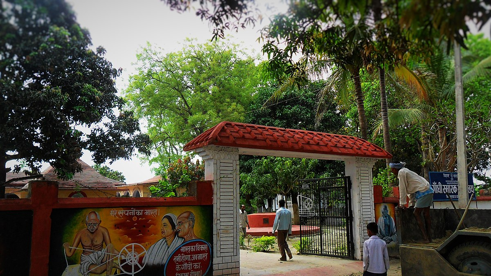

Bhitiharwa Ashram, located in Thana Gaunaha, West Champaran, Bihar (Pin-845455), is a historic place associated with Mahatma Gandhi’s Champaran Satyagraha of 1917. Gandhi chose this ashram as one of the centers for spreading education and creating social awareness among the oppressed farmers who were forced to cultivate indigo by the British. It also served as a base for training volunteers in cleanliness, education, and self-reliance. Today, the ashram stands as a symbol of India’s freedom struggle and attracts tourists and history enthusiasts who wish to connect with Gandhi’s legacy and Champaran’s historic role in India’s independence movement.